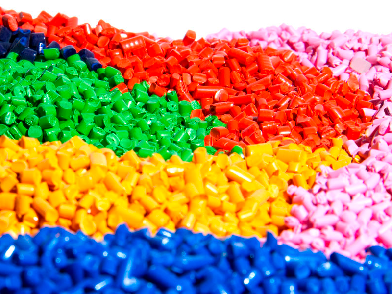

O que são polímeros?
Os polímeros são moléculas grandes formadas pela repetição
de unidades menores chamadas monômeros. Eles podem ser
encontrados na natureza ou produzidos industrialmente e
estão presentes em diversos materiais e organismos.
Polímeros

Polímeros são macromoléculas que são formadas a partir de moléculas menores repetidas,
conhecidas como monômeros. Os polímeros podem ser tanto sintéticos (produzidos em laboratório)
ou naturais (produzidos por células). Os polímeros são formados por reações de polimerização,
as quais podem ser de adição ou condensação.
Como os polímeros são formados?
Os polímeros são formados por meio de um processo chamado
polimerização, no qual moléculas menores, os monômeros,
se unem para formar cadeias maiores.
Dependendo dos monômeros utilizados e da forma como eles
se ligam, os polímeros podem apresentar diferentes
características, como flexibilidade, resistência,
elasticidade e durabilidade.
Exemplos e utilizações dos polímeros
A celulose é um polímero natural encontrado nas plantas e utilizada
na fabricação de papel e tecidos de algodão.
O polietileno é um polímero sintético muito utilizado na fabricação
de sacolas plásticas, embalagens e recipientes.
Onde encontramos os polímeros?
Os polímeros estão presentes em muitos objetos do cotidiano,
como embalagens, garrafas plásticas, roupas, pneus, utensílios
domésticos e materiais utilizados na construção civil.
Também fazem parte dos organismos vivos, compondo estruturas
e substâncias essenciais à vida.
O plástico é um material formado por polímeros. Muitos
plásticos demoram bastante tempo para se decompor no ambiente,
por isso é importante reduzir o desperdício, reutilizar
materiais e realizar o descarte correto para a reciclagem
quando ela estiver disponível.